Home Ranges
Analysis of Animal Movement Data with R (with Johannes Signer)
![]()
February 15, 2026
What is a home range?
Classic definition
“That area traversed by the individual in its normal activities of food gathering, mating, and caring for young. Occasional sallies outside the area, perhaps exploratory in nature, should not be considered as part of the home range.”
— Burt 1943
Some modern definitions
“Home ranges are the spatial expression of behaviours animals perform to survive and reproduce. These macroscopic patterns are determined by a large number of single movement steps, each of which results from the interactions among individual characteristics, individual state, and the external environment, and the moving animal in turn modifies both its individual state and the external environment. Home ranges are hence the resultant patterns of dynamic processes, which has profound consequences for the population-level effects of home range behaviour.”
— Börger et al. 2008
Some modern definitions
“We propose that a home range is that part of an animal’s cognitive map that it chooses to keep up-to-date with the status of resources (including food, potential mates, safe sites, and so forth) and where it is willing to go to meet its requirements (even though it may not go to all such places).”
— Powell and Mitchell 2012
Take-home Messages
- Home ranges emerge from a complex interplay of different factors:
- the heterogeneous environment
- the organism’s internal state
- its current needs/drivers
- its cognitive map
- the organism’s movement capacity
- Home-range estimation should be question driven, recognizing that home ranges, per se, are not typically the focus of biological interest (Fieberg and Börger 2012).
Estimating the home range
A criticism of the classic definition
“The conceptual definition of home range given by Burt (1943) lacks an objective, mathematical description that can be statistically estimated from data. We view relocation data as a sample of a much longer, continuous trajectory that is only one of many possible movement-path realizations of a continuous-time stochastic process.”
— Fleming et al. 2015
Two targets for estimation
Range distribution
Occurrence distribution
Two targets for estimation
Range distribution
“The range distribution addresses the lifetime space requirements of an animal and provides a metric that can be compared across individuals.”
— Fleming et al. 2015
Occurrence distribution
“… where an animal was located during the observation period.”
— Fleming et al. 2015
Two targets for estimation
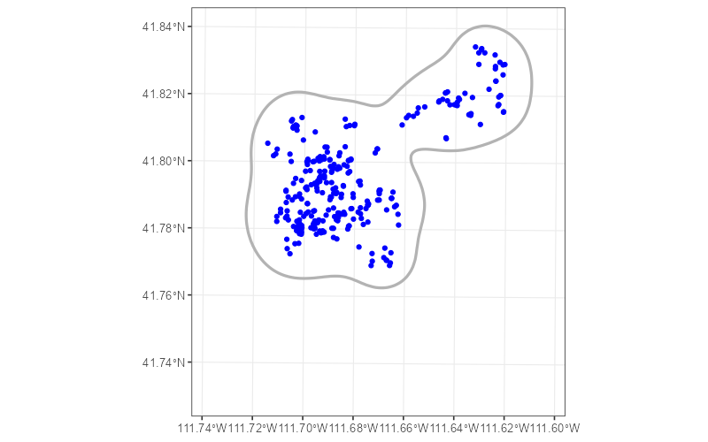
Two targets for estimation
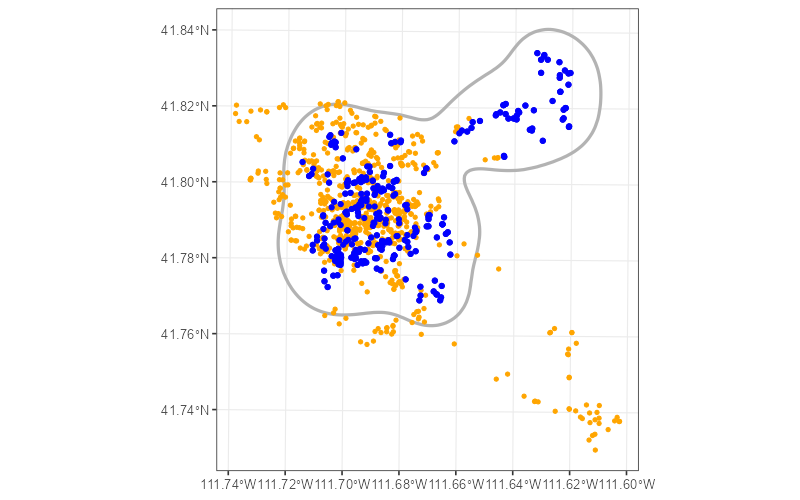
Two targets for estimation
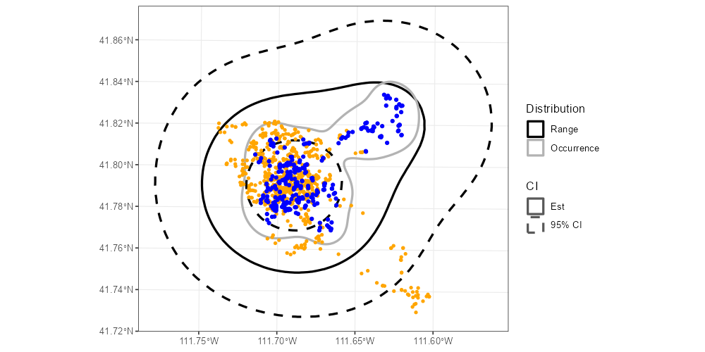
Types of estimators
Geometric
- Constructed following a set of rules; often hull-based.
- Based on the observed locations.
Probabilistic
- Rely on an underlying probabilistic model used to construct a utilization distribution (UD).
- Can be represented as a hull by outlining a cumulative probability of use.
Illustrating estimators
.pull-left[ We will illustrate some geometric and probabilistic estimators using example data from a published dataset on fishers (Pekania pennanti) from New York, USA (LaPoint et al. 2013).
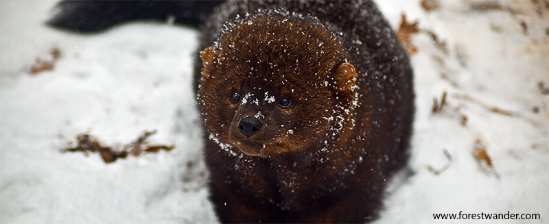
The example data are also available in the package amt.
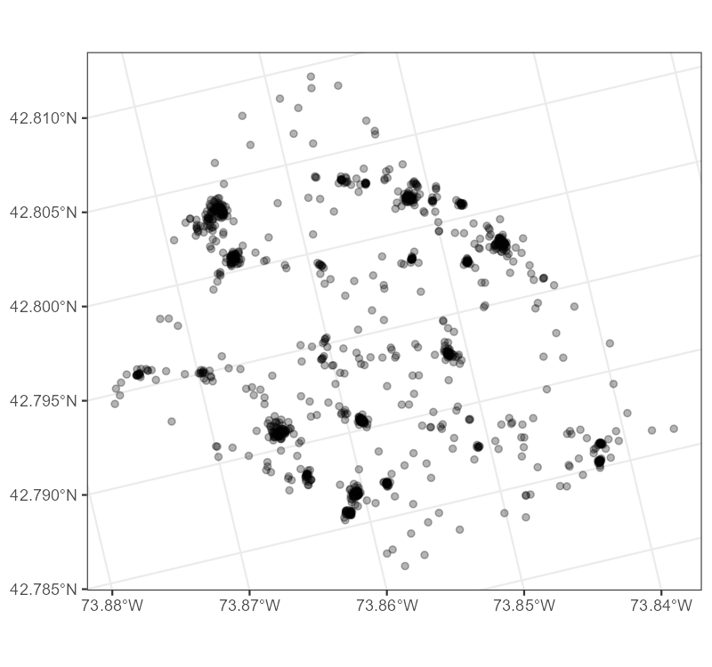
Geometric Estimators
Geometric estimators rely only the observed data.
Therefore, they always estimate the occurrence distribution.
Geometric Estimators
Minimum Convex Polygon (MCP)
100% MCP: The smallest polygon that encompasses 100% of the locations without any concave sides (all interior angles ≤ 180°).
Smaller MCPs can be created by excluding the most extreme locations.
- E.g., a 95% MCP excludes 5% of the most extreme locations before fitting an MCP.
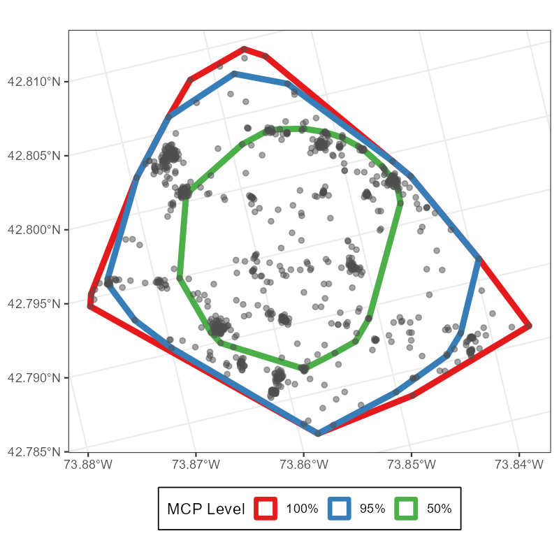
Geometric Estimators
Local Convex Hull (LoCoH)
- Constructs small MCPs around every location and groups of its “neighbors”.
- Nearby hulls are the successively merged to create an isopleth containing \(x\) % of the locations.
- Smaller isopleths are more intensively used.
- Approximates a UD.
- Resulting home range can contain sharp edges and holes.
See Getz et al. (2004, 2007) for details.
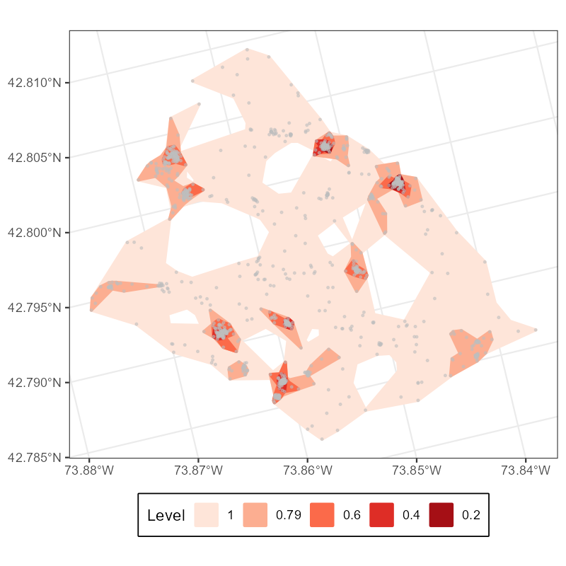
Geometric Estimators
Local Convex Hull (LoCoH)
- Neighborhoods can be defined by one of several algorithms
- Fixed points k-LoCoH: Each hull contains the focal point and its \(k-1\) nearest neighbors
- Fixed radius r-LoCoH: Each hull contains all points within a radius \(r\) of the focal point
- Adaptive a-LoCoH: Each hull contains all points within a variable radius such that the sum of the distances between the points and the focal point is \(\leq a\).
Probabilistic Estimators
Probabilistic estimators are constructed from an underlying statistical model for the UD.
They might estimate the occurrence distribution or the range distribution.
But first,
What is a UD?
What is a UD?
The utilization distribution is “a probability distribution … for the use of space with respect to time. That is, the utilization distribution usually calculated shows the probabilities of where an animal might have been found at any randomly chosen time.”
— Powell and Mitchell 2012
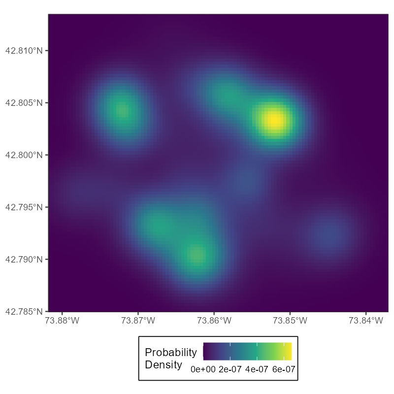
Probabilistic Estimators
Kernel Density Estimator (KDE)
- Kernel density estimation is a general problem in statistics.
- (estimating a continuous PDF from discrete samples)
- Smooths over the locations using a weighted window, the “kernel”.
- Sensitive to choice of “bandwidth” parameter (size of the kernel).
- Estimates the occurrence distribution.
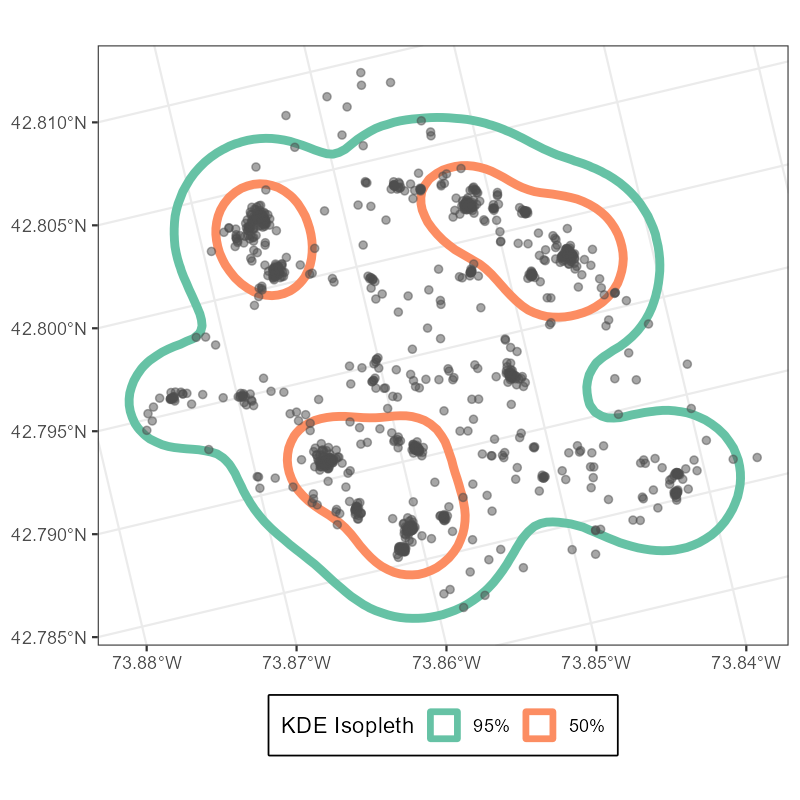
Probabilistic Estimators
Autocorrelated Kernel Density Estimator (AKDE)
- Based on an underlying continuous-time movement model.
- Uses autocorrelation in the movement data to estimate the smoothing parameter.
- Estimates the range distribution.
See Silva et al. 2021 for a recent review and practical guide for AKDE estimation.
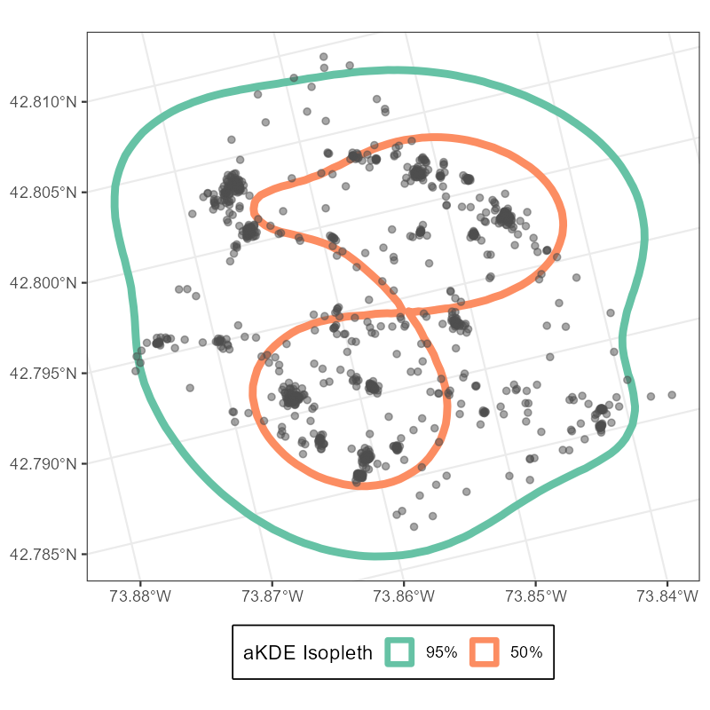
Autocorrelated Kernel Density Estimator (AKDE)
Model Choices
- The AKDE uses a fitted continuous-time movement model (CTMM) to estimate the utilization distribution.
- The estimated home range is thus sensitive to the choice of CTMM.
- The choices available in the R package
ctmm(and theamtwrapper) are models we already covered yesterday:- IID: independent, identically distributed; no autocorrelation
- BM: Brownian motion; diffusion
- OU: Ornstein-Uhlenbeck; correlated positions
- OUF: Ornstein-Uhlenbeck foraging; correlated positions and velocities
Fitting Choices
- Fit the model directly with
ctmm. See?ctmm.- Decide on a model and initial parameters.
- Otherwise, use
ctmm.select()for model selection.
- Fit the model using the
amtwrapperhr_akde().- Decide on a model and fit it using
amt::fit_ctmm(). - Or use model selection with
amt::fit_ctmm(..., model = "auto").
- Decide on a model and fit it using
Take-home Messages
Home range estimators can target either of two distributions:
- Occurrence distribution: where the animal was during the study period
- Range distribution: where the animal could be found at any future time if its movement process remains the same.
Geometric estimators only rely on observed data and can only estimate the occurrence distribution.
Probabilistic estimators are based on an underlying model for the UD. They can estimate the occurrence distribution or the range distribution depending on the underlying model.
Other estimators
There are many other home range estimators.
A few examples worth (briefly) discussing:
- Brownian bridge
- T-LoCoH
Brownian Bridge Home Ranges
- Estimates the UD by fitting a Brownian bridge movement model between successive locations.
- Estimates uncertainty around a step by assuming Brownian motion between start and end point.
See Horne et al. (2007) for details.
Figure inspired by adehabitatHR vignette (Calenge 2015).
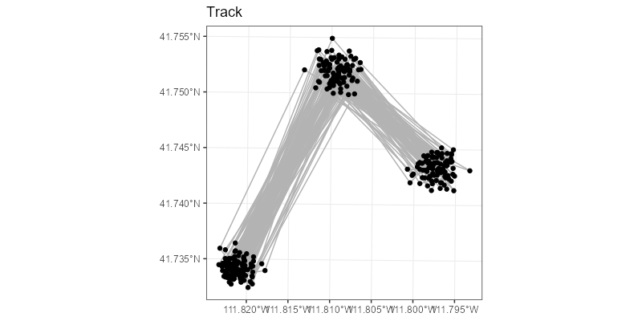
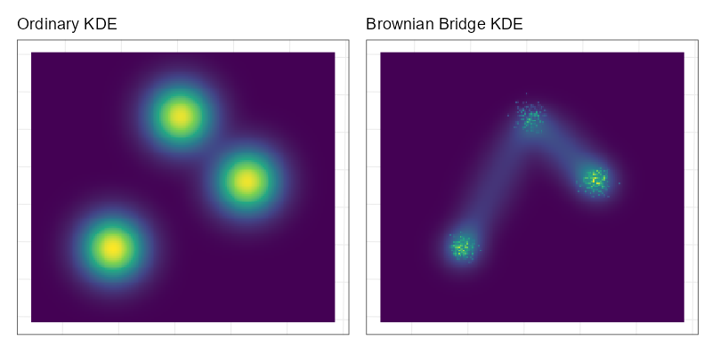
Brownian Bridge Home Ranges
- Estimates the UD by fitting a Brownian bridge movement model between successive locations.
- Extensions allow multiple movement modes (Dynamic BBMM; Kranstauber et al. 2012) and covariates (BBCM; Kranstauber 2019).
- Fit using
RpackagesadehabitatHRormove. - Probabilistic estimator.
- Occurrence distribution.
- Extensions allow multiple movement modes (Dynamic BBMM; Kranstauber et al. 2012) and covariates (BBCM; Kranstauber 2019).
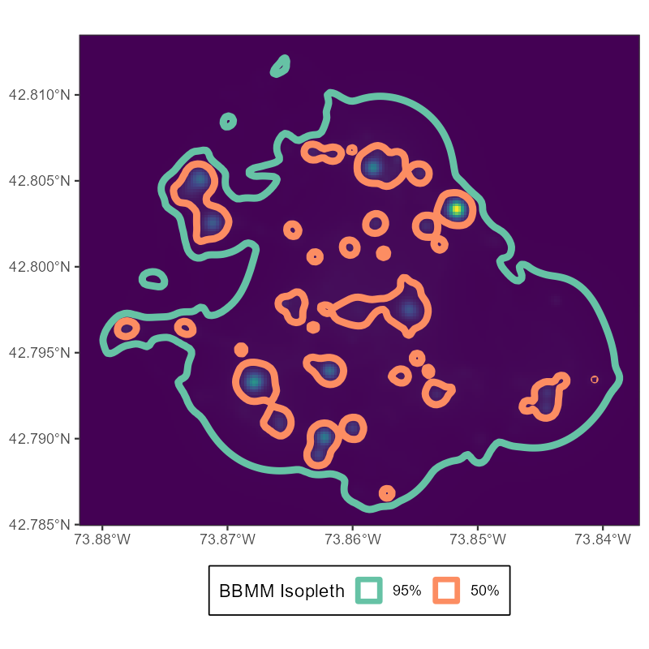
Brownian Bridge Home Ranges
Ordinary KDE
BBMM KDE
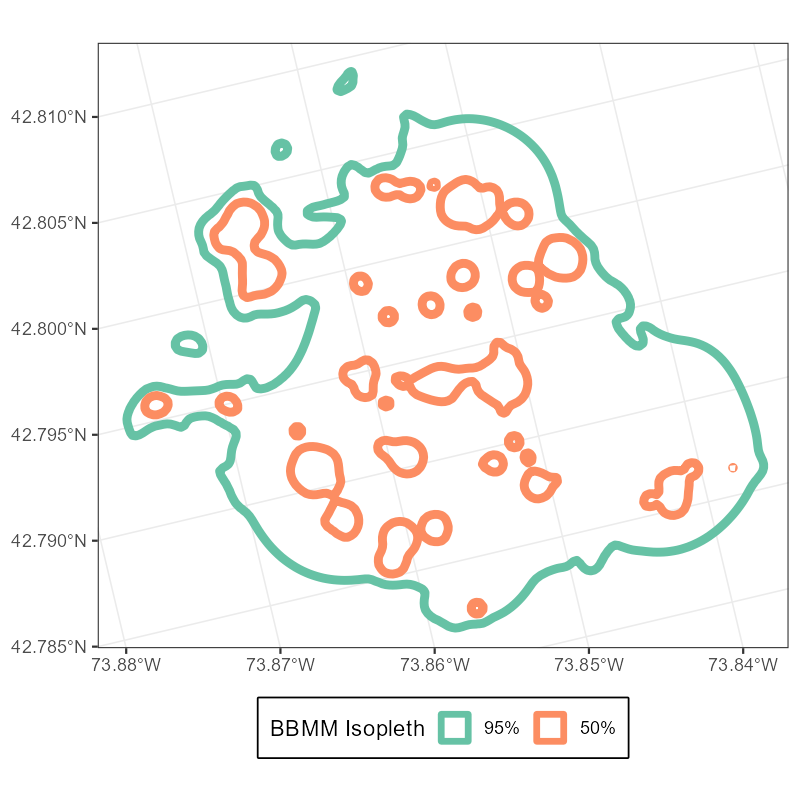
T-LoCoH
- Extension of LoCoH that considers time
- Clustering is based on space-time distance.
- Relies on a conversion factor \((s)\) to make units of time and space comparable. (Choosing this parameter is the hardest part.)
- Fit using
Rpackagetlocoh. - Geometric estimator.
See Lyons et al. (2013) for details.
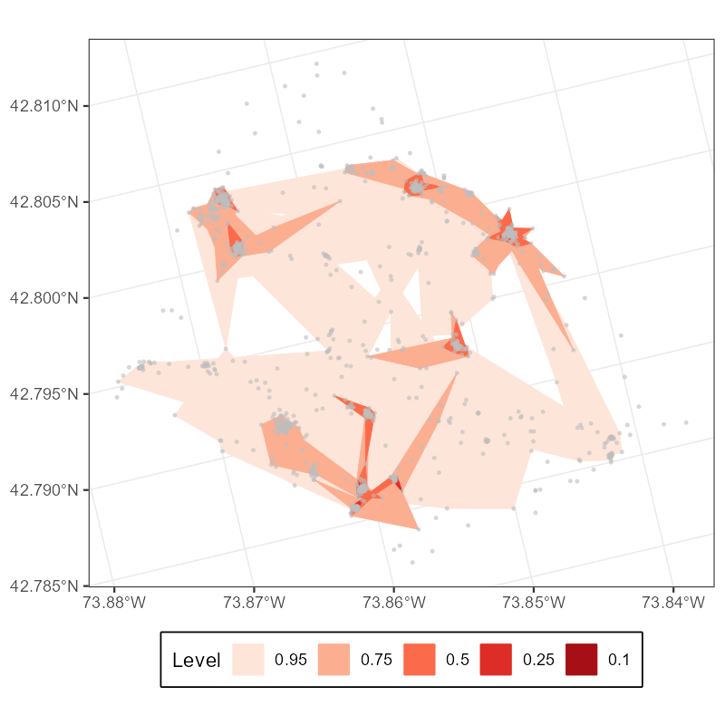
T-LoCoH Home Ranges
Ordinary a-LoCoH
T-LoCoH
Questions?
References
Börger, L., B. D. Dalziel, and J. M. Fryxell (2008). “Are there general mechanisms of animal home range behaviour? A review and prospects for future research”. In: Ecology Letters 11.6. ISBN: 1461-023X, pp. 637-650. DOI: 10.1111/j.1461-0248.2008.01182.x.
Burt, W. H. (1943). “Territoriality and Home Range Concepts as Applied to Mammals”. In: American Society of Mammalogists 24.3, pp. 346-352.
Fieberg, J. and L. Börger (2012). “Could you please phrase home range as a question?” In: Journal of Mammalogy 93.4, pp. 890-902. DOI: 10.1644/11-MAMM-S-172.1.
Fleming, C. H., W. F. Fagan, T. Mueller, et al. (2015). “Rigorous home range estimation with movement data: a new autocorrelated kernel density estimator”. In: Ecology 96.5, pp. 1182-1188. DOI: 10.1890/14-2010.1.
Getz, W. M., S. Fortmann-Roe, P. C. Cross, et al. (2007). “LoCoH: Nonparameteric Kernel methods for constructing home ranges and utilization distributions”. In: PLoS ONE 2.2. DOI: 10.1371/journal.pone.0000207.
Getz, W. M. and C. C. Wilmers (2004). “A local nearest-neighbor convex-hull construction of home ranges and utilization distributions”. In: Ecography 27, pp. 489-505.
Horne, J. S., E. O. Garton, S. M. Krone, et al. (2007). “Analyzing animal movements using Brownian bridges”. En. In: Ecology 88.9, pp. 2354-2363. DOI: 10.1890/06-0957.1.
Kie, J. G., J. Matthiopoulos, J. R. Fieberg, et al. (2010). “The home-range concept: are traditional estimators still relevant with modern telemetry technology?” In: Philosophical Transactions of the Royal Society B: Biological Sciences 365.1550, pp. 2221-2231. DOI: 10.1098/rstb.2010.0093.
Kranstauber, B. (2019). “Modelling animal movement as Brownian bridges with covariates”. En. In: Movement Ecology 7.1, p. 22. DOI: 10.1186/s40462-019-0167-3.
Kranstauber, B., R. Kays, S. D. LaPoint, et al. (2012). “A dynamic Brownian bridge movement model to estimate utilization distributions for heterogeneous animal movement: The dynamic Brownian bridge movement model”. En. In: Journal of Animal Ecology 81.4, pp. 738-746. DOI: 10.1111/j.1365-2656.2012.01955.x.
LaPoint, S., P. Gallery, M. Wikelski, et al. (2013). “Animal behavior, cost-based corridor models, and real corridors”. In: Landscape Ecology 28.8, pp. 1615-1630. DOI: 10.1007/s10980-013-9910-0.
Lyons, A. J., W. C. Turner, and W. M. Getz (2013). “Home range plus: A space-time characterization of movement over real landscapes”. In: Movement Ecology 1.1. ISBN: 2051-3933, pp. 1-14. DOI: 10.1186/2051-3933-1-2.
Powell, R. A. and M. S. Mitchell (2012). “What is a home range?” In: Journal of Mammalogy 93.4, pp. 948-958. DOI: 10.1644/11-MAMM-S-177.1.
Signer, J. and J. R. Fieberg (2021). “A fresh look at an old concept: Home-range estimation in a tidy world”. In: PeerJ 9, pp. 1-22. DOI: 10.7717/peerj.11031.
Silva, I., C. H. Fleming, M. J. Noonan, et al. (2021). “Autocorrelation-informed home range estimation: a review and practical guide”. In: Methods in Ecology and Evolution 2021.July, pp. 1-11. DOI: 10.1111/2041-210x.13786.